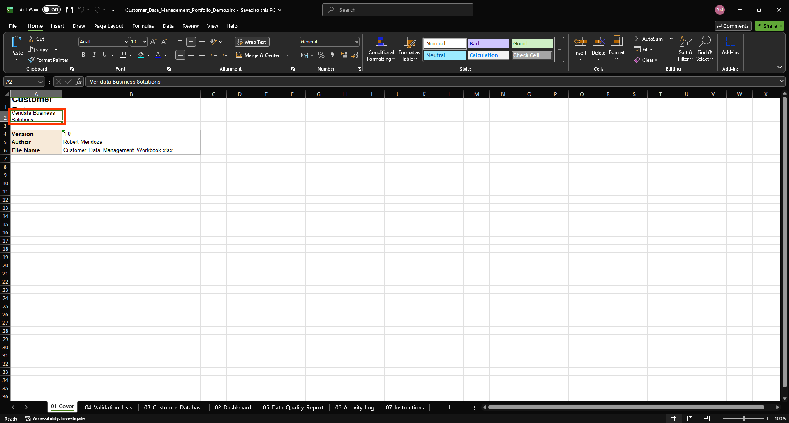
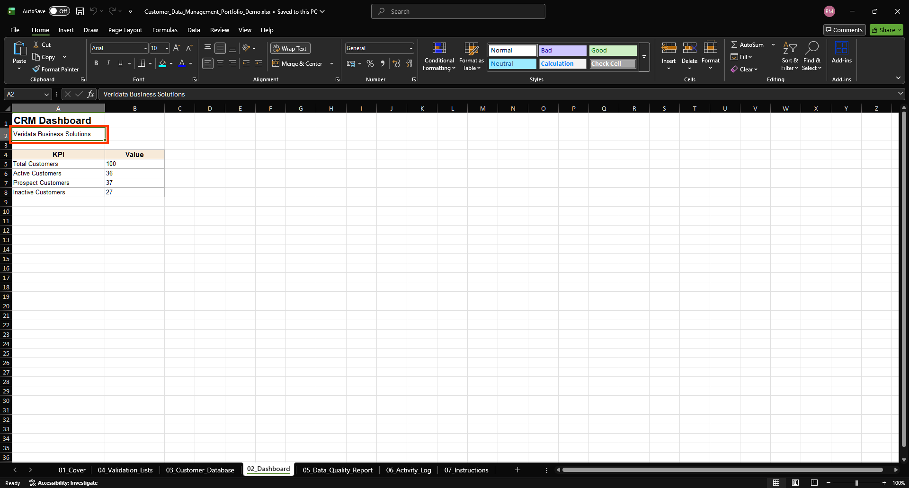
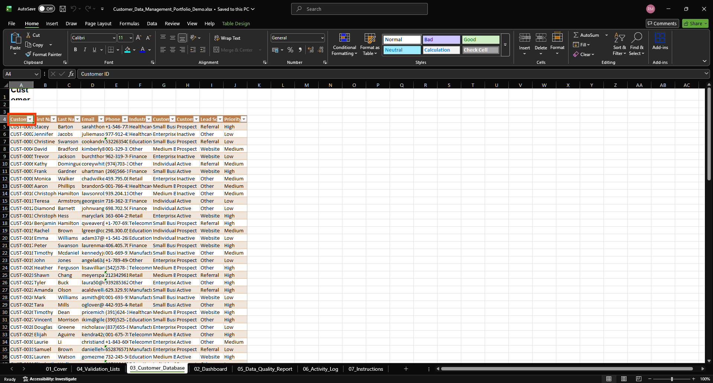
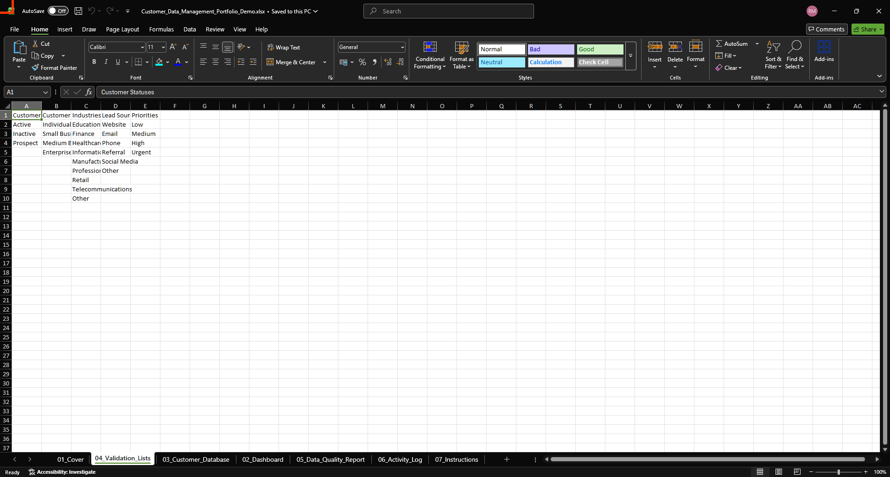
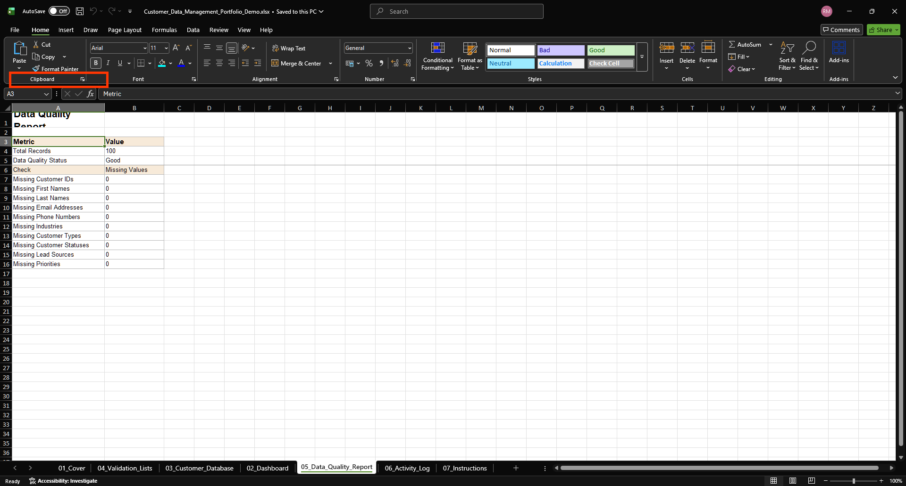
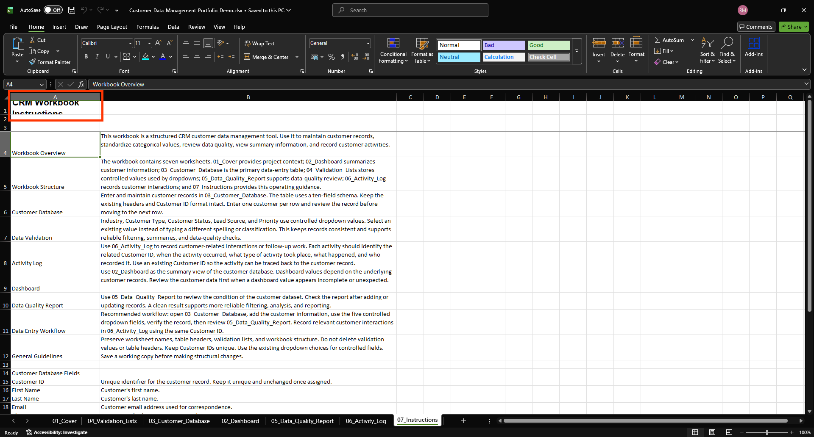

Cover
Provides project context and identifies the workbook.
Portfolio Project
A Python and OpenPyXL project that generates a structured customer data management workbook for organized CRM data entry, validation, reporting, and activity tracking.
01
This project demonstrates the design and automated generation of a structured CRM customer database workbook. The workbook is intended to support customer data entry, controlled classification, data-quality review, summary reporting, and customer activity tracking.
02
The production workbook contains seven integrated worksheets. Each worksheet has a defined purpose within the CRM data-management workflow.
Provides project context and identifies the workbook.
Provides summary information and customer-related metrics.
Primary customer data-entry table containing the 100-record portfolio dataset.
Stores controlled values used by customer-data dropdown fields.
Supports review of the condition and quality of the customer dataset.
Records customer-related interactions and follow-up activities.
Provides operational guidance for working with the workbook.
03
The Customer Database uses a defined ten-field schema and contains 100 demonstration records.
Industry, Customer Type, Customer Status, Lead Source, and Priority use controlled dropdown values.
The Data Quality Report provides a dedicated area for reviewing the condition of the customer data.
The Dashboard provides a summary view based on the underlying customer records.
The Activity Log demonstrates five customer activities linked to existing Customer IDs.
The Instructions worksheet explains workbook structure, data-entry workflow, validation, activity logging, and field usage.
04
The following screenshots were captured from the validated portfolio demonstration workbook.







05
The workbook was developed with automated validation and was reviewed against the intended production structure. The portfolio screenshots were also checked against the regenerated demonstration workbook.
Baseline project test suite passed during validation.
Instructions worksheet baseline tests passed after restoration.
Activity Log and Instructions portfolio screenshots were reviewed against the regenerated workbook.
Five demonstration activities are represented in the Activity Log table.
06
The portfolio workbook includes five sample activities. Each activity references an existing Customer ID and demonstrates how customer-related interactions can be recorded.
| Activity ID | Customer ID | Activity Type | Date |
|---|---|---|---|
| ACT-0001 | CUST-0001 | New Customer | August 20, 2026 |
| ACT-0002 | CUST-0025 | Data Review | August 21, 2026 |
| ACT-0003 | CUST-0050 | Contact Update | August 22, 2026 |
| ACT-0004 | CUST-0075 | Follow-up | August 24, 2026 |
| ACT-0005 | CUST-0100 | Data Quality Check | August 25, 2026 |
07
The workbook is generated programmatically rather than assembled manually. The builder architecture separates workbook components and uses automated tests to validate the implementation.
08
09
Download the demonstration workbook to inspect the generated CRM structure, customer data, validation lists, dashboard, data-quality report, Activity Log, and Instructions worksheet.
Download the Excel Portfolio DemoSource code: CRM Customer Database Builder on GitHub